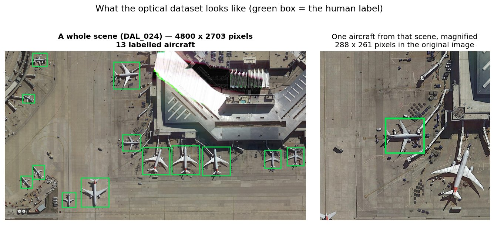
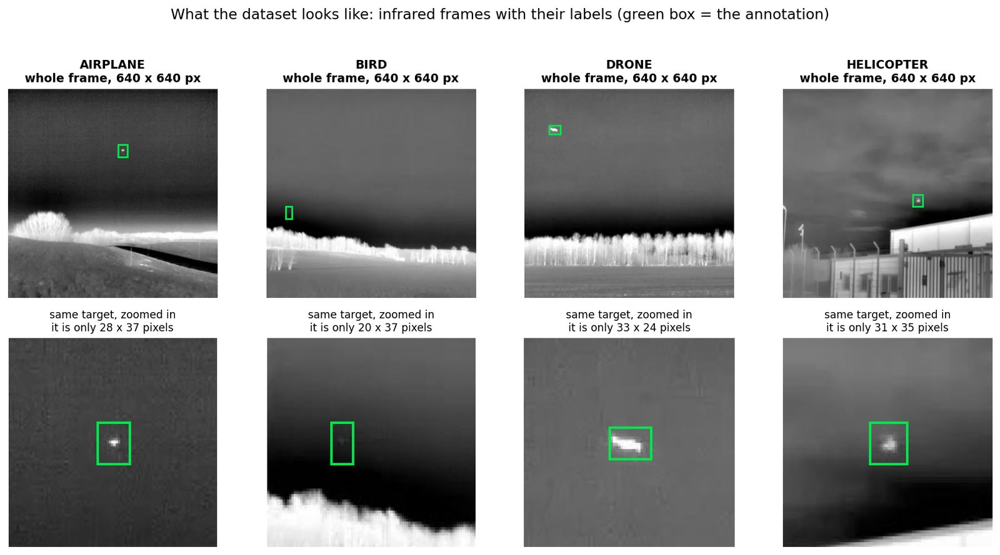
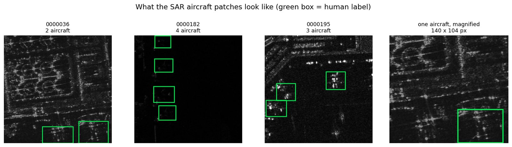
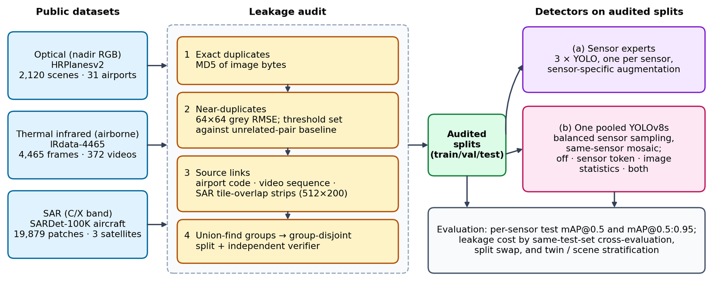
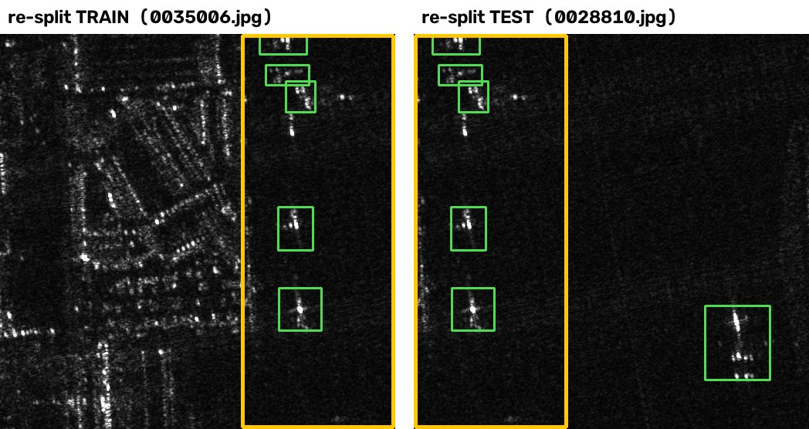
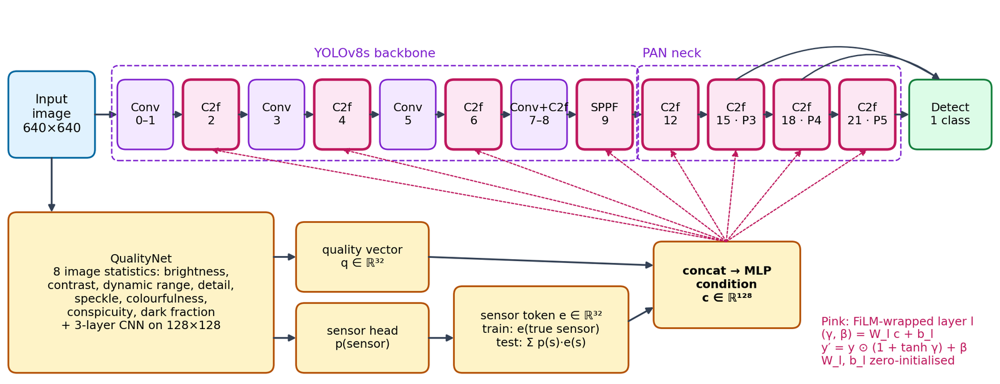
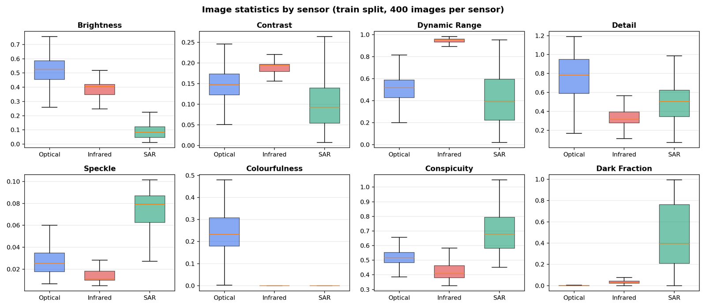
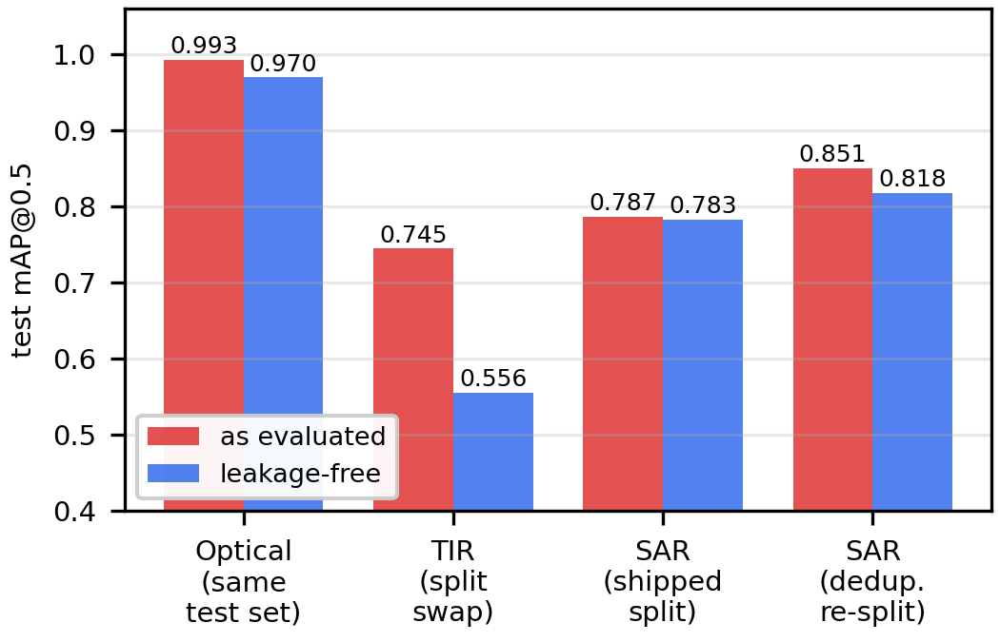

One YOLOv8s detector that finds aircraft in optical, thermal-infrared and radar images without being told which sensor took the image, trained and tested on data that was checked for train/test leakage, with a lightweight router that refuses images no trained sensor supports.
Optical satellite images fail under cloud and at night, thermal images show aircraft as tiny heat blobs, and radar (SAR) images show them as bright dots in grainy speckle. Each sensor covers a gap left by the others, so a practical system should accept an image from any of them.
This project builds such a system and measures it honestly. Three public aircraft datasets were audited, and every one of their original train/test splits was found to leak test images into training. On rebuilt, leakage-free splits, a single YOLOv8s detector matches three separate sensor-specific detectors, and a small router based on eight image statistics rejects images that do not come from any trained sensor.
The goal is to detect aircraft in optical, thermal-infrared and SAR images with one system that needs no sensor label, and to report accuracy that reflects real generalisation. Three questions drive the work:
The task is hard because targets are small (median 26–72 pixels), each sensor looks completely different, and no public dataset shows the same aircraft in all three sensors, so the images cannot simply be fused.
| Optical: HRPlanesv2 | Thermal IR: IRdata-4465 | SAR: SARDet-100K (aircraft) | |
|---|---|---|---|
| Images / aircraft boxes | 2,120 / 14,333 | 4,465 / 4,568 | 19,879 / 52,669 |
| Source | Google Earth, 31 airports | 372 airborne thermal videos | Gaofen-3, TerraSAR-X, HISEA-1 |
| Unique images | 2,114 | 1,931 | 13,268 |
| Leak in the original split | 100% of test images from training airports | 83% of evaluation files are copies of training frames | Overlapping tiles of shared scenes |
| Clean split (train / val / test) | 1,480 / 317 / 317 | 1,389 / 300 / 242 | 14,867 / 1,726 / 2,998 |




SARDet-100K cuts large radar images into 512-pixel tiles that overlap by 200 pixels. Neighbouring tiles share an identical strip but look different as whole images, so ordinary duplicate checks miss them. A strip-matching check compares the edge strip of every tile with the opposite edge of every other tile and found 8,637 pixel-identical overlaps.

aircraft (thermal birds become background).
A random forest on eight image statistics and a small CNN on a thumbnail identify the sensor of each image and vote. A Gaussian model of the statistics flags images that resemble no trained sensor, and the system refuses them instead of producing detections.

| Dataset | Comparison | Leaky mAP@0.5 | Clean mAP@0.5 | Inflation |
|---|---|---|---|---|
| Optical | Same test images, model had seen 68% of them | 0.993 | 0.970 | +0.023 |
| Thermal IR | Original split vs sequence-disjoint split | 0.745 | 0.556 | +0.189 |
| SAR | Original split vs its scene-clean part | 0.787 | 0.783 | +0.004 |
| SAR | De-duplicated random re-split vs scene-clean part | 0.851 | 0.818 | +0.033 |

Test mAP@0.5 / mAP@0.5:0.95 on each sensor's clean test set. The second number also rewards tight boxes.
| Model | Optical | Thermal IR | SAR |
|---|---|---|---|
| Separate sensor expert | 0.993 / 0.859 | 0.688 / 0.382 | 0.783 / 0.450 |
| One pooled YOLOv8s (final model) | 0.993 / 0.855 | 0.704 / 0.380 | 0.809 / 0.437 |
| + sensor token (FiLM) | 0.993 / 0.855 | 0.721 / 0.385 | 0.788 / 0.422 |
| + image statistics (FiLM) | 0.993 / 0.856 | 0.714 / 0.386 | 0.796 / 0.425 |
| + both (FiLM) | 0.993 / 0.855 | 0.711 / 0.372 | 0.779 / 0.414 |
All three public aircraft datasets leak test images into training, each in a different way: shared airports, copied video frames and overlapping SAR tiles.
Removing duplicates is not enough for tiled SAR data: 34.7% of re-split test images still shared a scene with training. The official SARDet-100K test split is the reliable one.
One plain pooled YOLOv8s matches three sensor-specific detectors, and needs no sensor label. Sensor conditioning adds no consistent gain.
One augmentation setting (rotating training images up to 180°) cost 0.23 mAP@0.5:0.95, more than any model change, so compared models must share augmentation.
A sensor router is most useful as a gatekeeper: it removed every false aircraft on unsupported images.
Split by source (airport, video or scene), check tiled data for overlaps, report validation and test separately, and give compared models the same augmentation.
The single pooled detector, FiLM variants, sensor router and refusal evaluation.
github.com/poojhamurali/unified-aircraft-detectionThe three sensor-specific detectors, dataset audits, clean-split builders and the SAR tile-overlap check.
github.com/poojhamurali/aircraft-detection-yolo-expertsgit clone https://github.com/poojhamurali/aircraft-detection-yolo-experts git clone https://github.com/poojhamurali/unified-aircraft-detection cd unified-aircraft-detection python3 -m venv .venv && source .venv/bin/activate pip install -r requirements.txt python scripts/build_dataset.py --rebuild # after preparing the expert datasets python scripts/smoke_test.py bash scripts/run_ablation.sh 30
Built with Python 3.9, PyTorch 2.8 and Ultralytics 8.4, trained on an Apple-silicon GPU. Datasets and trained weights are not included; each repository's README explains where to get and place them.